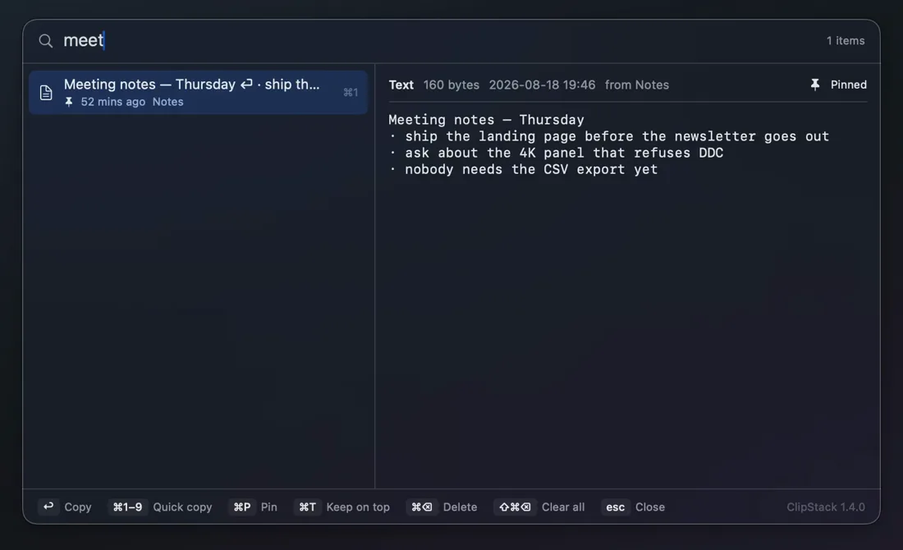
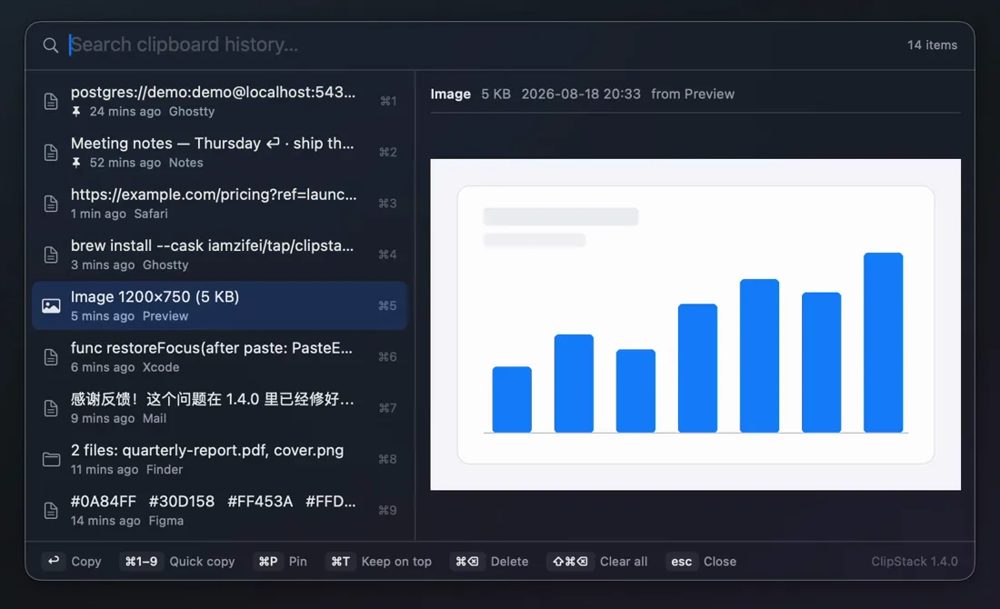
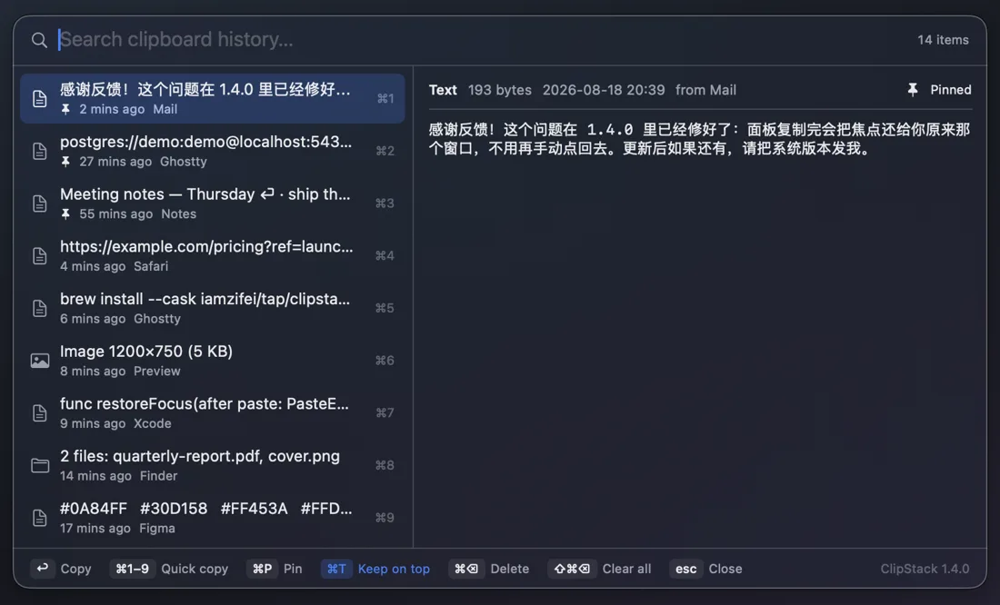
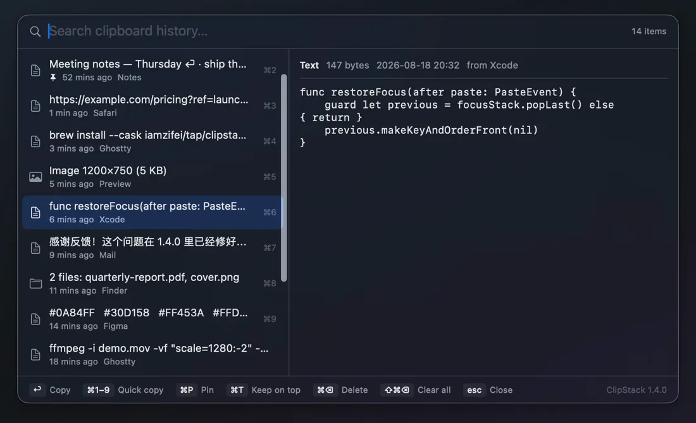

Search it, do not scroll it
Start typing and the list narrows as you go, Chinese input included. Arrow keys move the selection, ⌘1–9 grabs one of the first nine outright, and Return copies the selected entry and closes the panel.

 ClipStack for macOS
ClipStack for macOS
macOS remembers exactly one thing you copied. ClipStack keeps the rest — text, images and files — in a searchable panel that opens over whatever you are doing, previews the full contents, and puts the one you want back on the clipboard with a single keystroke.
macOS 14 or later · Apple silicon · MIT licensed · about 1000 lines of Swift, no dependencies
Real history, invented on purpose: every entry in this recording is demo data.
Copy three things in a row and all three are waiting — not just the last one.
Start typing and the list narrows as you go, Chinese input included. Arrow keys move the selection, ⌘1–9 grabs one of the first nine outright, and Return copies the selected entry and closes the panel.

Rich text keeps its formatting, images stay images, and files copied in Finder come back as files. The preview pane on the right shows the whole thing before you commit to it — not a truncated line.

⌘T pins the panel above every window and stops it closing when it loses focus or after a copy. It becomes a reference card you read from while typing somewhere else — the state survives a restart.

⌘P pins an entry to the top of the list and out of the way of the 300-entry limit, so the snippet you paste ten times a day never falls off the end.

History lives in a plain folder in your Library and goes nowhere else. There is no account, no sync, no analytics and no network call except the update check.
Anything a password manager marks as concealed or transient is never recorded, following the nspasteboard.org convention — so the password you just copied does not end up in a list.
Also from the same menu bar